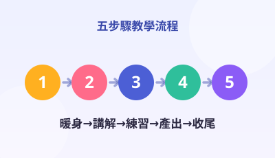
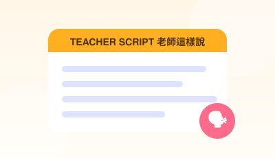
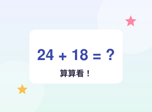
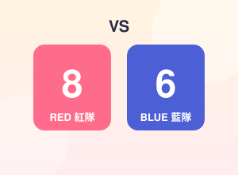
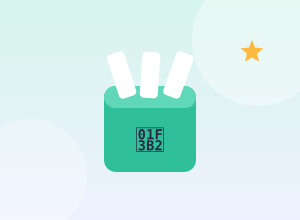
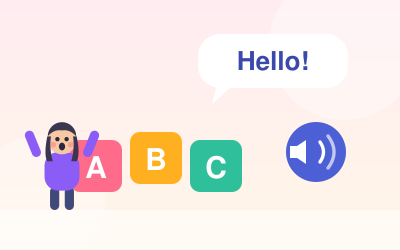

五步驟標準流程
暖身 → 講解 → 練習 → 產出 → 收尾。每堂課同一個節奏，孩子知道接下來要幹嘛，老師也不會上到一半卡住。
不用教學、不用說明書。
在教學舞台上點年級、點科目、點單元。三下英文、二上數學……點三下就設定完成。
畫面自動跳出第一步「暖身」，附上計時器與老師要說的話。時間到會自動響鈴提醒換下一步。
每一步都寫清楚：老師說什麼、學生做什麼、要準備什麼、怎麼算成功。照做就是一堂完整的課。
你不需要有教學經驗。螢幕上藍色虛線框裡的字，就是你可以直接念出來的話。念完做下一件事就好。
打開網頁就有，不必再另外準備。

暖身 → 講解 → 練習 → 產出 → 收尾。每堂課同一個節奏，孩子知道接下來要幹嘛，老師也不會上到一半卡住。

「現在請大家把課本翻到第 12 頁。」每一句該說的話都寫好了，直接念出來，教學品質就被拉到同一條水平線。
答對有音效、有彩帶、有掌聲；答錯有溫和提示音再給一次機會。孩子的注意力自己會回到螢幕上。
螢幕上互動、紙本上練習。按列印就會自動隱藏答案與解析，印出來直接當作業或小考卷。
孩子的注意力，自己會回到螢幕上。





三個入口，點一個進去就對了。
選好班級與單元，五步驟流程＋計時器＋逐字腳本，帶你走完一整堂 45 分鐘的課。
進入舞台 →
單字翻卡會發音、句型跟讀、看圖選字小遊戲。老師發音沒把握也不怕，按 🔊 就有標準美式發音。
開始上英文 →計時器、隨機點名、快速分組、兩隊計分板、獎勵音效鈕。管秩序需要的六樣東西都在這。
打開工具箱 →
國語・數學・自然・社會・英語，依康軒／南一／翰林／何嘉仁分節，段考範圍全數自編。 目前已建置 36 本合訂題本、26,068 題：一到六年級每科每版每回 30 題的綜合練習題本 （小一小二全題目標注音），三～六年級上學期第一次、第二次段考與期末考題本， 以及三～六年級下學期第一次、第二次段考題本（每版 5 回 × 30 題）。可線上點看解析，也可以直接列印成紙本。